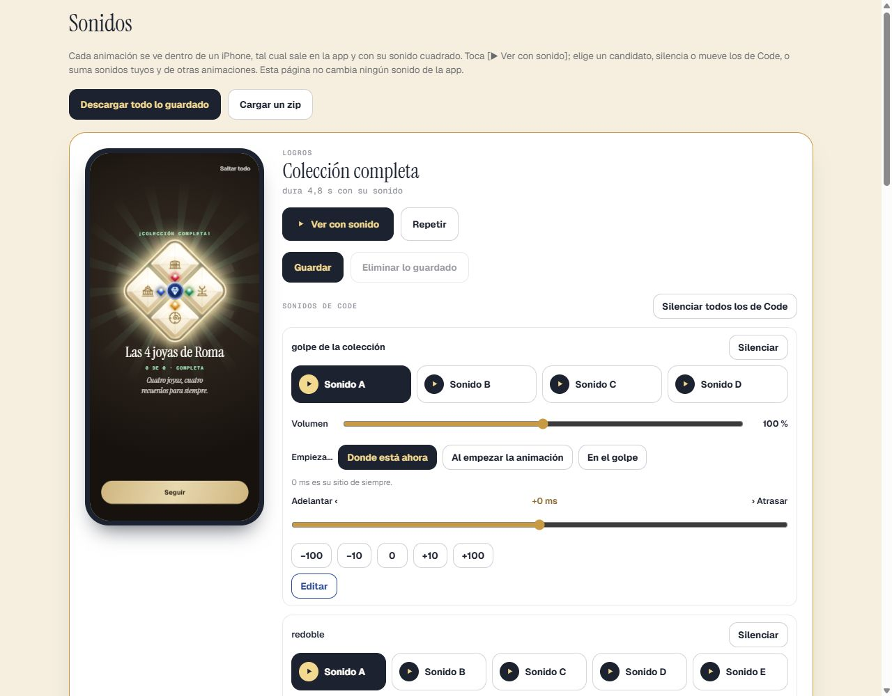
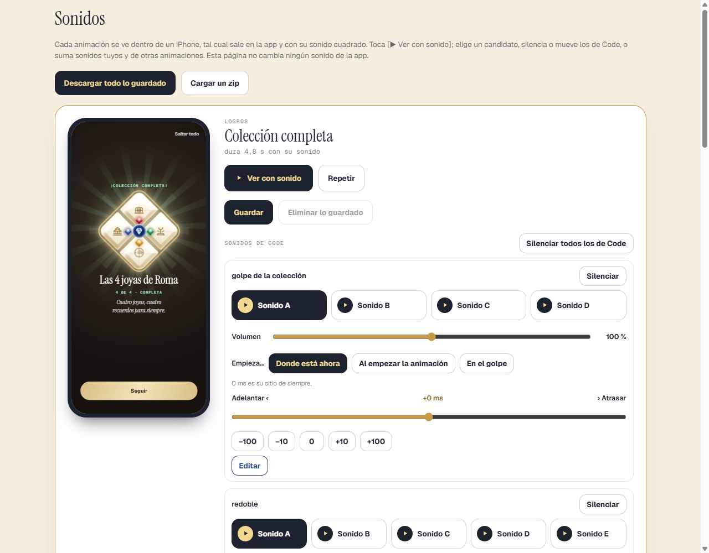
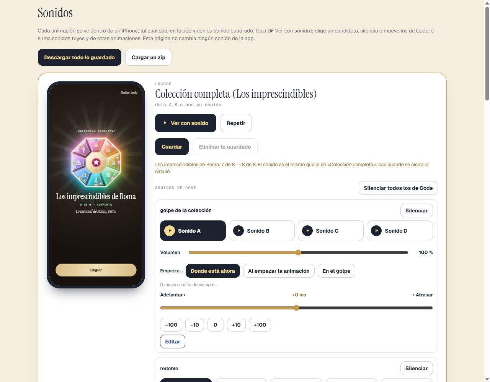
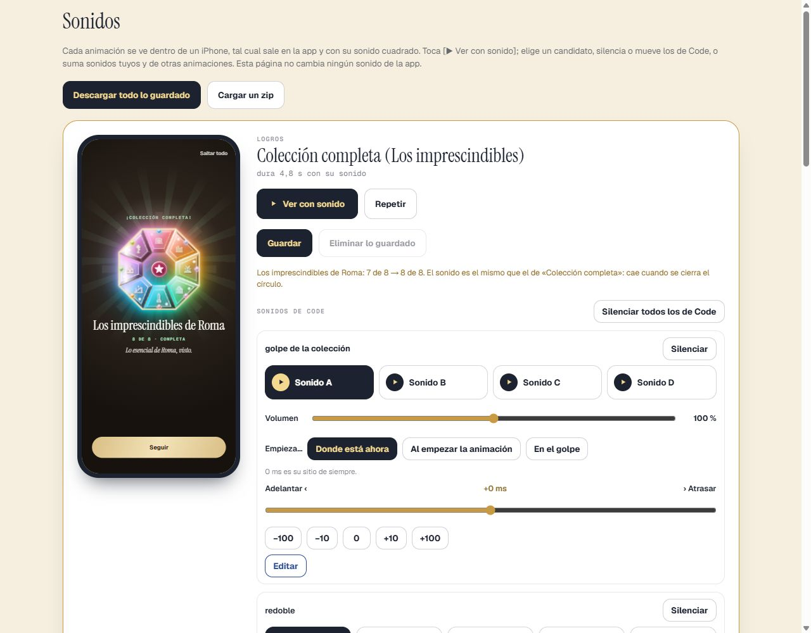
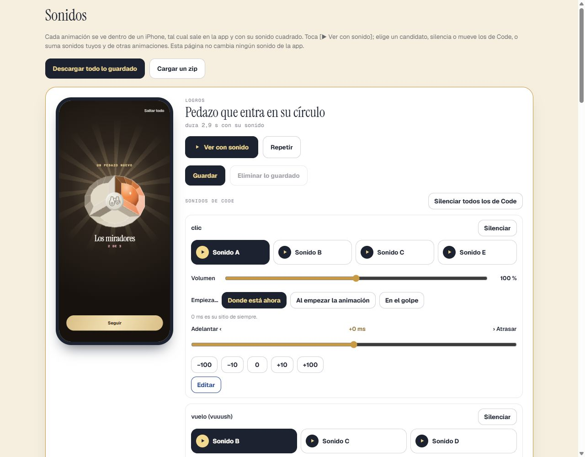
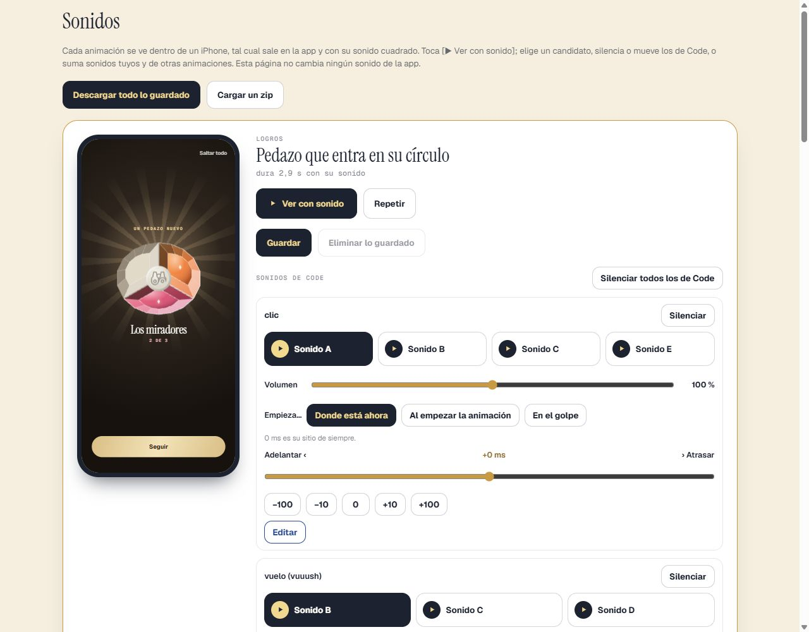
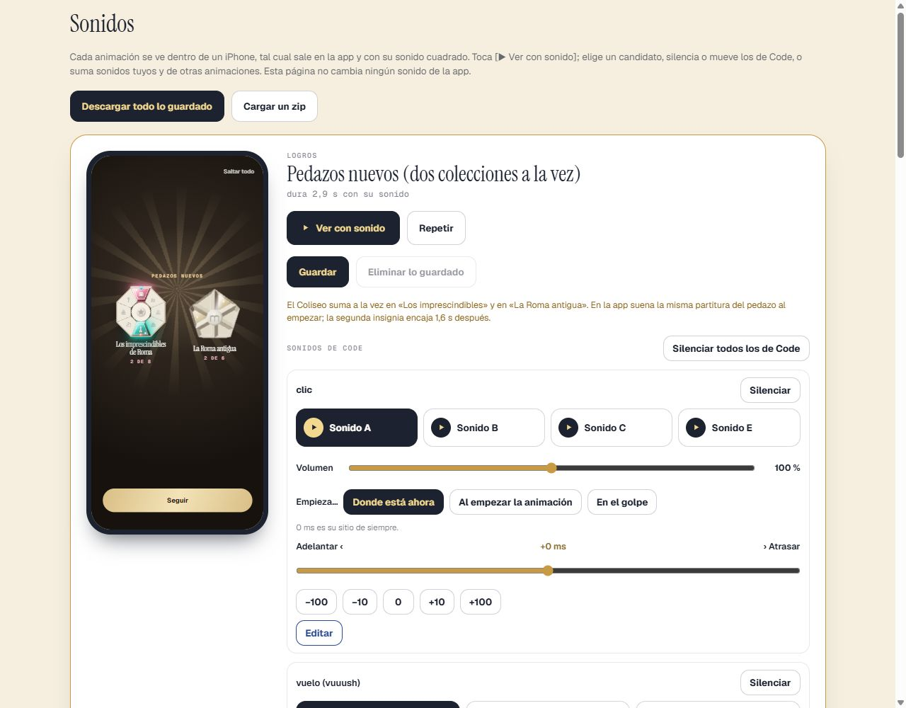

coleccion, pedazo) conservan su id: lo que ya hayas elegido o guardado sigue valiendo.RETRASO_DEL_PEDAZO = 0,9 s) caía 0,3 s tarde: el clic llegaba cuando el pedazo ya había encajado. Ahora la pantalla usa la misma constante que el sonido: el pedazo encaja a los 2,13 s y el clic cae a los 2,10 s; el color a los 2,28 s y el brillo a los 2,30 s. Es el ÚNICO cambio en el código de la app (una línea, para que sonido y animación vayan juntos); la insignia, el diseño y los textos no se tocan. La «Colección completa» ya iba bien (el golpe cae a los 3,0 s, cuando se cierra el círculo).| Tarjeta | Antes | Después |
|---|---|---|
Colección completa (Las 4 joyas de Roma)coleccion | Salía «0 DE 0 · COMPLETA» y la insignia sin lo que ya tenías: no volaba ningún pedazo.  | Entra con 3 de 4; el 4.º vuela, encaja, se enciende el círculo y sale «4 DE 4 · COMPLETA» con su frase.  |
Colección completa (Los imprescindibles) · NUEVAcoleccion_imprescindibles | No existía.  | 7 de 8 → 8 de 8: «8 DE 8 · COMPLETA».  |
Pedazo nuevo (Los miradores)pedazo | Ponía «2 DE 3» desde el principio y la insignia sin nada de lo que ya tenías (el Janículo se llamaba «janiculo», un nombre que no está en los datos).  | Entra con 1 de 3 («1 DE 3»); el Janículo vuela, encaja y sale «2 DE 3».  |
Pedazos nuevos (dos colecciones a la vez) · NUEVApedazo_dos | No existía. | El Coliseo encaja en «Los imprescindibles» (1 → 2 de 8) y 1,6 s después en «La Roma antigua» (1 → 2 de 6).  |
supabase/migrations/0092_route_original.sql) y luego pasa docs/dias/COMPROBAR_0092.sql: debe salir una fila con todo = true. Hasta entonces la app funciona (guarda sin esa columna) y la ruta original solo vive en el móvil donde se creó la ruta.